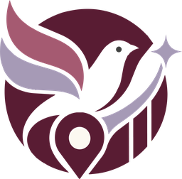
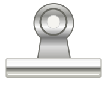
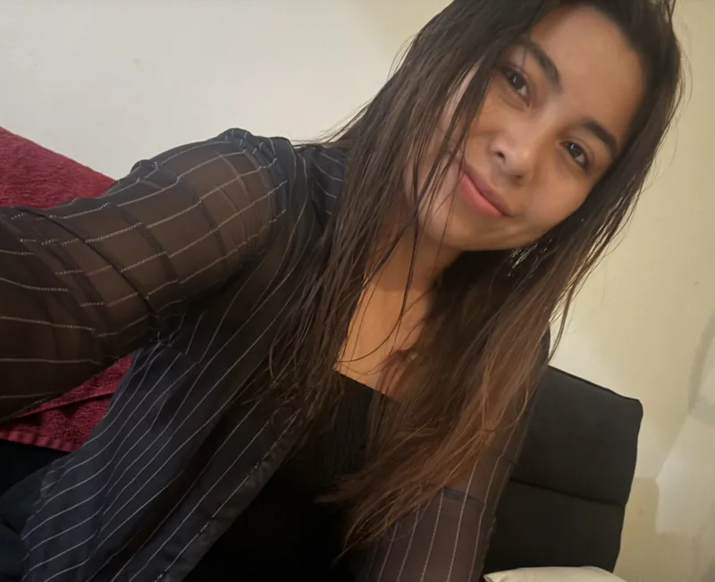
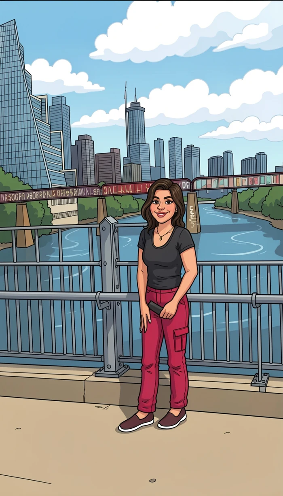

HL DIGITAL
Un proyecto propio para ayudar a negocios, marcas y empresas a construir su presencia digital.

HL DIGITALMI PORTAFOLIOCREATIVA · CERCANA · DETALLISTA · COMPROMETIDA

LA PERSONA DETRÁS DE HL DIGITAL
Toca las pegatinas y conoce mi trabajo.


¡Hola! Soy la creadora de HL Digital.
Me gusta transformar ideas de negocios y marcas en una presencia digital que se entienda y se sienta propia. Trabajo con Google Business Profile, SEO local, páginas web y logotipos.
Disfruto conectar la parte visual con los detalles que hacen útil un proyecto: que los servicios estén claros, que sea fácil encontrar la información y que contactar al negocio sea sencillo.
Detrás de cada trabajo hay una conversación, muchas decisiones y atención a los detalles. En este portafolio te comparto una parte de lo que he construido con HL Digital.
Un proyecto propio para ayudar a negocios, marcas y empresas a construir su presencia digital.
Creación y optimización de perfiles de Google, organización de servicios y SEO local.
Páginas web y soluciones digitales adaptadas a los objetivos de cada negocio, marca o proyecto.
Formación continua y práctica en proyectos reales, cuidando la experiencia en cada entrega.
Una presencia digital clara,
cuidada y fácil de utilizar.
NEGOCIOS REALES, PRESENCIA LOCAL
Perfiles de Empresa en Google que forman parte de mi trabajo con negocios.
GOOGLE BUSINESS PROFILE
GOOGLE BUSINESS PROFILE
GOOGLE BUSINESS PROFILE
CONSTRUCCIÓN Y REMODELACIÓN
El análisis por ubicación ayuda a entender la visibilidad de un negocio en su zona.
DEL NEGOCIO A LA PANTALLA
Cada negocio tiene su propia forma de presentarse. Estas son algunas de las webs en las que he trabajado.
PINTURA Y CONSTRUCCIÓN
SERVICIOS PARA EL HOGAR
DISEÑO WEB
RETIRO DE OBJETOS Y LIMPIEZA
PINTURA RESIDENCIAL Y COMERCIAL
SÍMBOLO, FORMA Y PERSONALIDAD
En HL Digital, el símbolo, las formas y los detalles conviven en una identidad propia. Este es un vistazo a mi trabajo desde mi propia marca.
POR RECORRER ESTE PEQUEÑO UNIVERSO
¿Tienes una idea para tu negocio? Me encantará conocerla.
(346) 541-2861